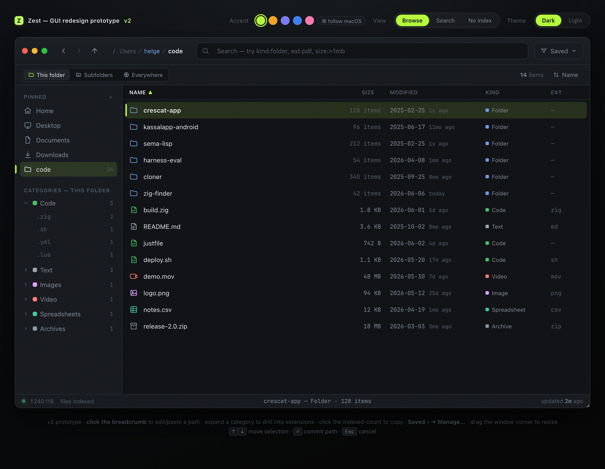

Measured, not marketed
Millions of files. Milliseconds to search.
3–5mstypical text search across 1M+ files
10.3sto scan 3.06 million local entries
6.6×faster indexing than per-file stat
Zest is a minimal Finder alternative built for people who know the file is there—and don’t want to wait for macOS to find it.
The speed of a command palette. The comfort of a file browser.

Zest keeps the familiar pieces of a Mac file browser, then replaces the slow path with a compact, purpose-built search engine.
Combine plain text with precise filters like ext:pdf, size:>1mb, and kind:folder.
Sizes report actual allocated disk space—including sparse files—rather than misleading logical lengths.
Real AppKit controls, native icons, keyboard navigation, Quick Look, pinned folders, and no web shell around the edges.
Stay in this folder, include subfolders, or search everywhere. The scope is always visible and one click away.
Everything is built and queried locally. Cloud placeholders are never silently downloaded just to populate results.
Swift on the surface, Zig underneath, and an MIT license. Read the implementation or shape it to your workflow.
Zest’s interface stays thoroughly Mac-like while a compact Zig engine handles the work that needs to move.
Built for macOS. Powered by Zig. Open to everyone.